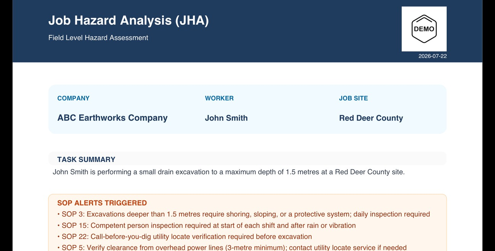
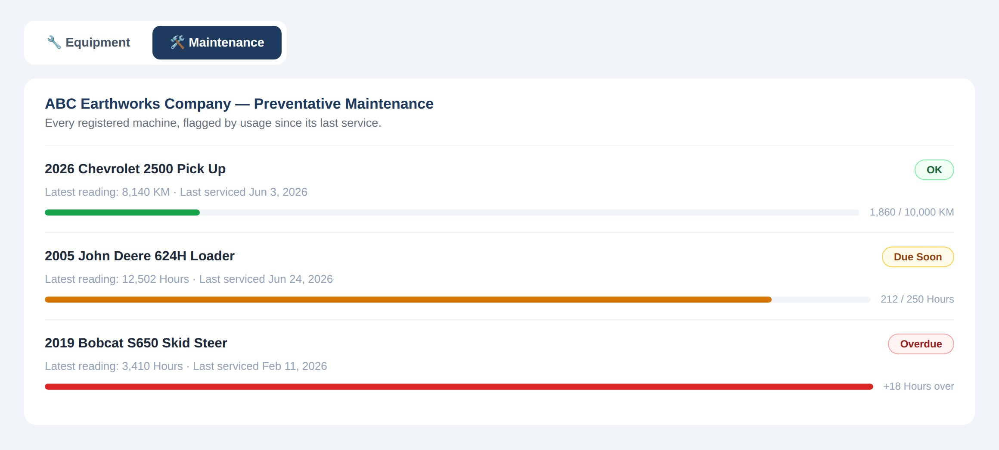
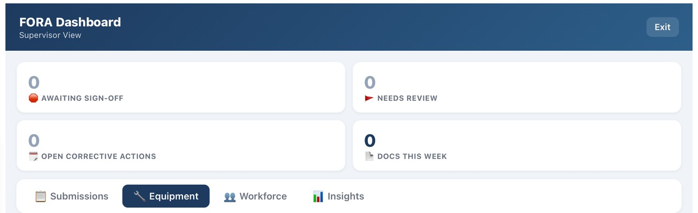

The Big 5 — five standard safety documents, fully AI-assisted and shaped around your company's own procedures. And when the standard five aren't enough, Custom Builds — software built for exactly how your company runs, priced by scope, not by guesswork.
FORA comes standard with the Big 5 — Field Level Hazard Assessments, Toolbox Talks, Incident Reports, Near Miss Reports, and Equipment Inspections. Every one is generated with AI, and every one is shaped around your company, not a generic template.
Describe what happened, or what you're about to do, by voice or text. FORA cross-references it against your own SOPs, your own equipment, and your own site — then hands back a complete, compliant document in seconds.
Need something the Big 5 doesn't cover? That's what Custom Builds are for — a real piece of software, built around your process, living right inside your FORA account.

Every plan starts with five standard documents your crew already needs to file. Past that, if it's a process your company runs — on paper, in a spreadsheet, or only in someone's head — there's a good chance it can be built directly into your account.
Field Level Hazard Assessments, Toolbox Talks, Incident Reports, Near Miss Reports, and Equipment Inspections — AI-assisted, shaped around your company's own SOPs, included with every plan.
Bigger than a form — a whole process built into FORA, priced for the size of the job, not a blank page.

See what's possible →Every FLHA, toolbox talk, incident, near miss, and equipment inspection your crew submits lands in the same place — grouped, filterable, and built for a supervisor scanning a busy week, not hunting through folders or a group chat.
Group by document type, site, or crew. Collapse what's already been reviewed. Flag anything that needs a second look. It's the same dashboard whether you're running a 6-person crew or a 40-person operation — and it's the same place any Custom Build shows up, too.

How your data is protected: every request is checked against a signed, server-verified session before it ever reaches your data — nothing gets through unverified. Direct database access is refused by default: Row Level Security is switched on for every table with no bypass policies, so the access-controlled dashboard is the only door in. And it's scoped per company, so your dashboard only ever shows your data, walled off from every other company on FORA.
Onboarding isn't a project — it's a form. Send your SOPs however you have them, messy or not, and your company is live and generating documents within one business day.
However messy your SOPs are today, send them as-is — cleaning them up is our job, not yours. See exactly how to get started →
Most "AI safety" tools generate generic, plausible-sounding output. FORA cross-references your company's own SOPs and equipment — the result reflects how your site actually operates.
Voice-first entry means a worker can generate a compliant document standing in the field, phone in a dusty hand, without typing a paragraph.
No stack of disconnected apps for inspections, toolbox talks, and incident reports. Everything a crew files lives in the same place — and when you need something more, Custom Builds extend it, on equal footing with the Big 5.
Every company's data is walled off from every other's at the access-control layer — not a setting you have to remember to turn on.
The Big 5 are just the start. Custom Builds mean FORA can end up looking nothing like anyone else's setup — because it's built around how your company actually works.
Every document FORA generates is AI-assisted — that's not a secret, and it's not something to hide. But FORA itself isn't a venture-backed platform run by a support queue somewhere overseas.
It's built and supported by one real person, based in Central Alberta — the same part of the world as a lot of the crews using it. When you email forafieldsolutions@gmail.com, or ask about a Custom Build, you're talking directly to the person who actually builds it — not a support queue, not a chatbot.
Set up your company and generate your first document in minutes — or tell us what you wish existed, and get a quote to build it.